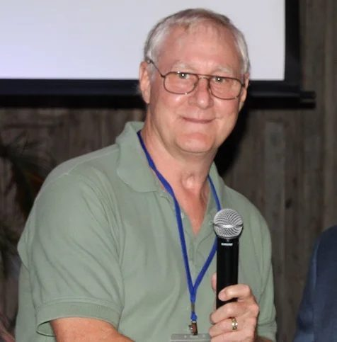
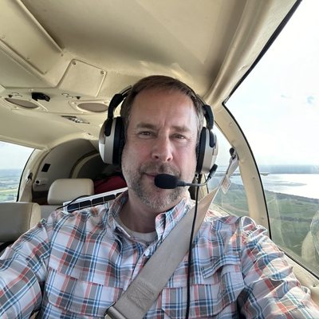
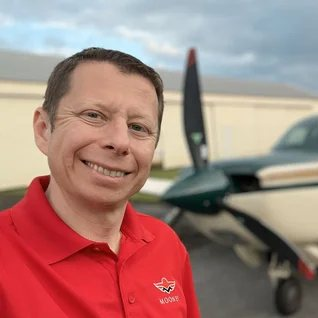
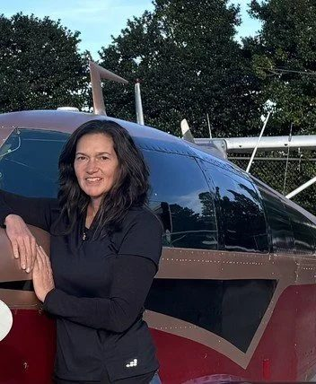

Making the best Mooney pilots even better.
The Mooney Summit was founded to better the breed of the Mooney pilot through type-specific education and safety instruction.
Our mission
Each Summit pairs an open Airport Day with Safety Day seminars where participants earn FAA WINGS knowledge credits, funded by individual and corporate donations and a registration fee. Funds above the cost of the event support our charitable program, the Bill Gilliland Foundation, which provides crisis assistance to the families of downed Mooney pilots at their time of greatest need.
Our goal is to make Mooney pilots better stewards of general aviation and to build family involvement in a safety culture. We bring the best educators in their fields together with Mooney pilots in a relaxed setting, where families can come along and enjoy it too.
Mooney Summit, Inc. is a 501(c)(3). No directors, administrators, or speakers are paid. This work is volunteer, fueled by people who love these airplanes.
Our team
A purpose is only fulfilled when its pursuit is met with passion. Our board and volunteers want to further general aviation through knowledge, training, and outreach.

Mike Elliott
Mike co-founded Mooney Summit, Inc. He is a Master Instructor Emeritus, a FAASTeam Lead Representative, CEO of Mooney Pros, Inc., a retired engineer, and a founding pilot of Honor Flight. He is dedicated to helping Mooney pilots become the best pilots and stewards of their airplanes they can be.
Dr. Ron Dubin
Ron is an orthopedic surgeon and instrument-rated pilot with more than 3,000 hours in Mooneys. A Summit co-founder, he has run 33 full marathons, including Boston.
Ken Yale
Ken lives in Indianapolis. He is an investor and an owner of flight school aircraft.

Dan Bass
Dan is a Mooney Pros flight instructor based at Winona Municipal Airport. A private pilot since 1994 and a CFI for more than 22 years, he has over 3,500 flight hours and has owned Mooneys for the past 16 years. He specializes in transition and recurrent training for Mooney owners. In-flight emergencies in Mooneys, including a 2017 in-flight carbon monoxide event and an engine failure he safely managed to a landing at an airport, shape how he prepares clients for real-world risks.

Alex Gertsen
Alex is an aviation leader with over 25 years of experience in the industry. An instrument-rated commercial pilot and M20K owner, he is Sr. Director of Airport Advocacy and Vertical Infrastructure at the National Business Aviation Association (NBAA) and Industry Co-Chair of the FAA/industry Surface Safety Group. He is also a contract pilot for a local charter operator, flying organ transport flights.

Kerry Targia
Kerry spent 25 years in nursing, including 20 in Labor and Delivery and 5 in the NICU. She owns a 1966 Mooney M20C and a Cessna 150F, is working toward her Private Pilot certificate, and supports Mooney families through the Bill Gilliland Foundation.
Spirit of the Summit award
Each year we recognize people who give above and beyond for no personal gain.
| Summit | Honoree |
|---|---|
| Mooney Summit I, 2014 | Dr. Ron Dubin |
| Mooney Summit II, 2014 | JoAnn Dubin, Alice Elliott |
| Mooney Summit III, 2015 | Nick Elliott |
| Mooney Summit IV, 2016 | Max Gurgew, Bob Kromer |
| Mooney Summit V, 2017 | Neil and Becky Cohen |
| Mooney Summit VI, 2018 | Bruce Landsberg |
| Mooney Summit VII, 2019 | Mari Metzler |
| Mooney Summit VIII, 2020 to 2022 | Rick and Glennie Junkin |
| Mooney Summit IX, 2023 | Dave and Ruth Taisch |
| Mooney Summit X, 2025 | Walter Dodge |
| Mooney Summit XI, 2026 | Alex Gertsen |
Mooney Summit, Inc. is a FAASTeam Industry Member. Participation in the FAASTeam does not constitute FAA endorsement of any organization, product or service. IRS determination letter (PDF)